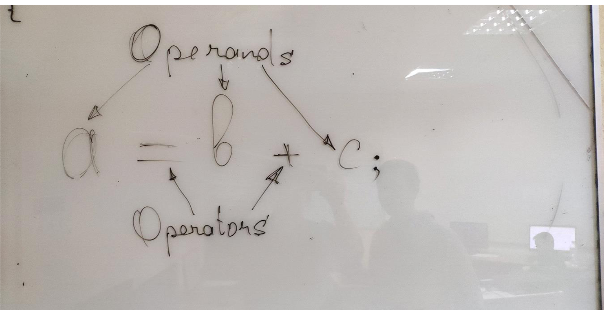

Вещественные типы предназначены для хранения дробных чисел, (чисел с плавающей запятой).
Вещественные типы есть только знаковые, они не могут быть unsigned. В языке C++ есть всего два вещественных типа: float и double.
float – вещественный тип одинарной точности, занимает 4 Байта памяти.
double – вещественный тип двойной точности, занимает 8 Байт памяти.
float и double могут хранить ОЧЕНЬ БОЛЬШИЕ и ОЧЕНЬ МАЛЕНЬКИЕ числа, но эти числа могут быть не совсем точными.
Разделителем целой и дробной части у float и double является точка, а не запятая.
Объем занимаемой памяти переменной, константой или типом данных всегда можно определить оператором sizeof() следующим образом:
cout << sizeof(int) << endl;
или
cout << sizeof(1024) << endl; //это константа типа int, она занимает 4 Байта
Минимальное и максимальное значение для любого типа можно узнать при помощи макроопределений Visual Studio. Например, INT_MIN возвращает минимальное значение, которое можно записать в int, a INT MAX Максимальное значение. У любой беззнаковой переменной минимальное значение всегда 0, а максимальное, например для int-a можно узнать при помощи UINT_MAX. U означает unsigned.
Д.З.: при помощи оператора sizeof и макроопределений вывести на экран объем занимаемой памяти для все числовых типов данных. Макроопределения можно найти в файлах "limits.h" и "float.h", эти фалы можно открыть любым текстовым редактором.
Имя переменной нужно для того, чтобы к ней можно было обращаться по этому имени. К переменной обращаются для того, чтобы сохранить в ней какое-то значение, а потом использовать это значение. Когда мы сохраняем значение, мы обращаемся к переменной "на запись", а когда смотрим какое в ней значение, то обращаемся на чтение. В процессе компиляции имена переменных преобразуются в адреса памяти.
Для именования переменных используются идентификаторы (identifiers) составленные по определенным правилам. Идентификатор(identifier) – это имя.
Имя переменной должно быть осмысленным, то есть, по имени переменной должно становиться понятно, что в ней хранится!!! Например, переменная double Weight; содержит вес чего-либо.
Константа - это именованная область памяти, содержимое которой НЕ может изменяться в процессе выполнения программы. Для того, чтобы из переменной сделать константу, перед ее объявлением нужно написать ключевое слово const.
int speed = 0; //Скорость (переменное значение)
const int MAX_SPEED = 250; //Максимальная скорость (постоянное значение)
Константы принято называть заглавными буквами, для того чтобы после объявления было понятно, что это константа.
Кроме именованных констант существуют так же символьные, строковые и числовые константы.
Символьная константа - это один единственный символ, заключенный в одинарные кавычки (''), например '+' ИЛИ 'A'. Символьные константы это константы типа char. Это легко проверить следующим образом:
cout << + << endl;
cout << sizeof(char) << endl;
cout << sizeof('+') << endl;
cout << typeid('+').name() << endl;
Строковая константа - это сколько угодно, каких угодно символов, заключенных в двойные кавычки "", например — "Hello World" или "+". Строковые константы заниамют на 1 байт больше, чем содержат символов, это связано с тем, что компилятор неявно добавляет ASCII-символ с кодом 0 в конец строки. Это легко проверить следующим образом:
cout << "Строковые константы:\n";
cout << "Hello World" << endl;
cout << sizeof("Hello World") << endl;
cout << "+" << endl;
cout << sizeof("+") << endl;
Числовая константа - это просто число в исходном коде программы. Оно может быть целым, или дробным, например:
cout << 1024 << endl; // Это числовая константа
cout << sizeof(1024) << endl;
cout << typeid(1024).name() << endl;
НО, у каждого значения (переменной, константы) в языке C++ есть тип. 1024 константа типа int. Есть числовые константы и других типов:
cout << 3.14 << endl; //Числовая константа типа double
cout << 5. << endl; //Числовая константа типа double
cout << 5.f << endl; //Числовая константа типа float
cout << 12311 << endl; //Числовая константа типа long long
cout << 123ull << endl; //Числовая константа типа unsigned long long
Числовые, символьные и строковые константы еще называют литералами.
Программа на языке C++ состоит из выражений, каждое из которых заканчивается символом ';'.
Выражение (Expression) - это синтаксическая конструкция, состоящая из операндов и операторов.
Операнды - это объекты (элементы выражения), над которыми выполняется какое-то действие. В качестве операндов в выражениях обычно выступают переменные и константы.
Операторы — это объекты (элементы выражения), которые показывают, какое действие нужно выполнить над операндами. Операторы обозначаются одним или двумя специальными символами.
Операторы бывают: унарные, бинарные и тернарные. Унарные операторы выполняют действие над одним операндом, бинарные могут работать только с двумя операндами, а тернарные только с тремя операндами. Например -3 здесь оператор '-' является унарным, он просто показывает что число 3 меньше нуля. В выражении 8 – 3 оператор минус – бинарный, он показывает из какого числа (8) вычесть другое число (3). 5*3 — выражение имеет смысл одно число умножается на другое. *3 выражение не имеет смысла, то есть, оператор * только бинарный – может работать только с двумя операндами (числами).
Все операторы языка C++ можно разделить на категории: